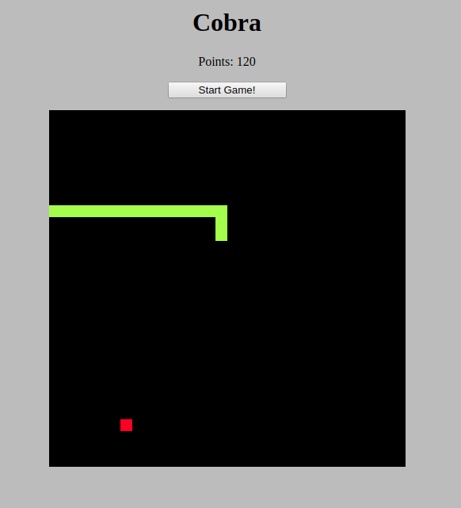
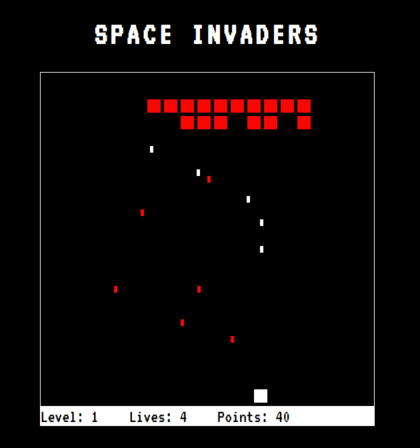

Cobra, um jogo em JS
29 de março de 2019 | Coding

Há alguns meses investi um tempo para aprimorar algumas habilidades em JS e nesse período desenvolvi um
Space Invaders, um jogo simples porém que acrescentou muito na minha dinâmica com a linguagem.
Recentemente fiz o mesmo, porém, o jogo da vez é o famoso Snake game.
Dessa vez o jogo é mais simples, porém muito divertido de fazer e jogar, alguns quebra-cabeças de como a
serpente é gerada e como faze-lá andar.
Clique aqui para jogar!
Invasores do Espaço!
29 de novembro de 2018 | Coding

Nas últimas semanas, dediquei um tempo para estudar JS e combinar o útil ao agradável.
Para treinar alguns conceitos de programação decidi fazer um jogo muito popular, o Space Invaders. Tive
diversos desafios que normalmente não enfrento quando estou programando para tratamento de
dados/métricas e processamento de informações, como por exemplo, como saber que o invasor foi atingido
pelo seu disparo? Como fazer com que os elementos da tela não estourem para fora do mapa?
São questões como essa que faz o desenvolvimento de software que te tiram da sua zona de conforto muito
mais interessantes.
Acesse -> aqui
Desenvolvimento & Crescimento
28 de maio de 2018 | Coding
A partir dessa semana vou começar a fazer algumas ferramentas online para aprendizado, sem pretensão
nenhuma, apenas para desenvolvimento pessoal.
Se ficou interessado em ver o que está rolando nos bastidores, entre -> programming